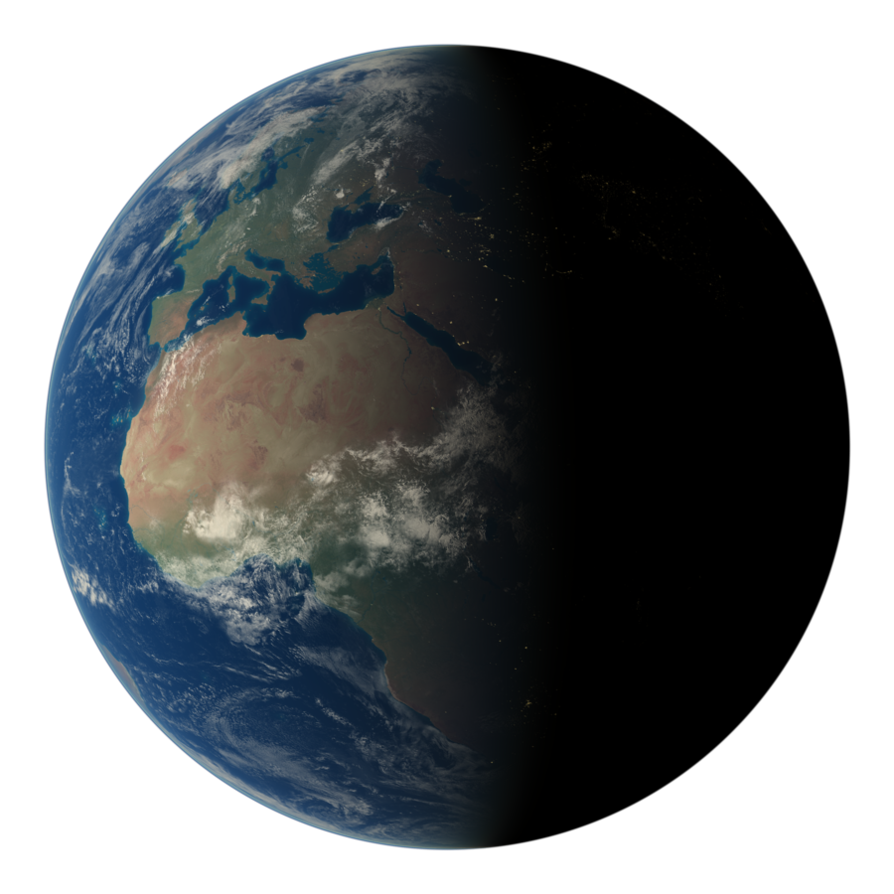

Typography is often misunderstood as a rigid system of standardized fonts and neutral rules. This collection challenges that convention by exploring letterforms not as static shapes on a page, but as living extensions of the human body, architectural space, and cultural dialogue, which we can see in the whole world.
